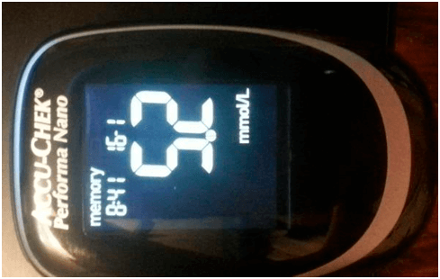

BUSINESS auf einer KRANKHEIT:
Sie erfahren über den DIABETES alles, was man viele Jahre
verschweigt hat
Kategorie: Nutzbare Artikel für die Diabetiker

Hallp! Ich heiße Andreas Troebs.
Nie früher habe ich die Bewertungen geschrieben, aber jetzt will ich es für die Menschen wie ich machen, die auch an Diabetes krank sind. Denn wegen Behandlungsfehler kam ich beinahe ums Leben.
Ich bin 35, ich habe ne Frau und zwei Kinder. Ich arbeite als Koch in einer Kantine. Vor zehn Jahre hat man mir die Diagnose gestellt - der Diabetes des 2. Typs. Ich fühlte mich immer müde, konnte nicht normal essen, ich zwang mich nur Fastenspeisen zu essen . Bei meiner Arbeit! Dazu sollte ich ständig den Zuckerspiegel im Blut kontrollieren.

Mein Tag begann sich mit dem Stich des Fingers und Messung des Zuckers. Ich gab auf die Arzneimittel Tausende Euro pro Monat aus. Beim Lohn des Kochs! Desaster! Dazu noch und PREISE auf die Tabletten in Österreich wurden in der letzten Zeit bis um das Zehnfache HÖHER.

Ich war gezwungen mein Ferienhaus und mein Auto verkaufen, ich nahm ein Kredit, um die Behandlung zu bezahlen und die Teststreifen zu kaufen … Ich habe mir beinahe ein frühes Grab gefunden. Es war mir ständig übel , und in ein paar Monaten wurde ich viel dicker. Und noch ich wurde beschwerlich für meine Familie. Ich hatte Angst, dass auch meine Kinder den Diabetes des 2. Typs bekommen.
Ich dachte, dass es schon nicht schlechter sein kann, aber einmal bekam ich das Risiko für mein ganzes Leben.
Ich habe die neue Schuhe gekauft und habe mir die Füße durchgelauft. Nach einiger Zeit haben sich die Schwielen in die Offenwunden verwandelt. Ich spürte keinen Schmerz, aber es war schwer zu gehen, ich hatte das Brennen in den Füssen , deswegen ging ich zum Arzt. Er sagte, dass die Wahrscheinlichkeit der Entwicklung der Gangrän sehr hoch sei, und es bedeutet nur eines – ich kann mein BEIN VERLIEREN!!!

Bei diesen Worten brich mir der Schweiß aus. Ich wusste, dass die Gangrän sehr oft bei den Diabetikern entwickelt, aber ich dachte nicht, dass es mich auch berühren wird. Wie konnte ich ohne Bein leben und arbeiten!? Nach dem Besuch des Arztes bekam ich risiege Angst für mein Leben… und eine neue Liste der Arzneimittel.
Am Abend telefonierte ich per Skype meinem alten Schulfreund, er lebt in Amerika. Er hörte meine Beschwerden zu, dass ich mit der Gesundheit Probleme habe, dass ich nicht genug Geldmittel für Arzneimittel habe. Er seinerseits erzählte mir, dass in Amerika die Situation auf dem Markt der Arzneimittel ähnlich sei. Ihre Ärzte empfehlen auch die teuersten Medikamente, die die Gesundheit nur verschlechtern. Denn JE MEHR MENSCHEN KRANK SIND, desto MEHR TABLETTEN ERFORDERLICH SIND. Und der Verkauf bring enormen Gewinn den Pharmaunternehmen . Ich meine, dass Österreich in dieser Frage keine Ausnahme ist, man verschweigt es nur noch.

Ich fragte meinen Freund, ob er weiß, wie man in Amerika den Diabetes heilt, er erzählte mir, dass alle jetzt die üblichen Arzneimittel ablehnen zugunsten natürlicher Ergänzungspräparate . Deren Wirksamkeit ist viel höher, und sie verursachen keinen Schaden für den Körper, im Unterschied zu den Tabletten. Fast alle bekannten Arzneimittel gegen Diabetes ersetzt das Sondermittel - «» . Bei uns in Österreich hab ich davon sogar nicht gehört, deswegen bat ich ihm um ein Link auf dieses Produkt.
Ich stallte fest, dass "" ein organisches Mittel in Form von Pulver ist. Die Hauptkomponente ist Inulin, erhalten aus der Pflanze Heliánthus tuberósus . Seit Jahrhunderte verwendet man es im Osten für die Normalisierung des Spiegels des Zuckers im Blut. Nach den zahlreichen Untersuchungen hat die moderne Wissenschaft die Wirksamkeit dieses Polysaccharids im Kampf gegen Diabetes des zweiten Typs nachgewiesen. Und das wichtigste ist – Inulin im Zusammenwirkung mit L- Arginin hilft die Zellen der Pankreasdrüse, die das Insulin ausarbeiten, zu regenerieren!

”” ist das einzige Ergänzungspräparat auf der Grundlage dieses Extrakts. Beim Diabetes des 2. Typs ermäßigt es die Blutglukose , ermäßigt oder völlig beseitigt (über 20% Kranken) den Bedarf in den blutzuckersenkenden Präparaten , festigt die Blutgefäße und reguliert den Umsatz der Nahrungsstoffe.
"" ist empfohlen in Zusammenwirkung mit der schonvorhandenen
medikamentösen Therapie , und als PROPHYLAXE zu verwenden, falls das Risiko der Entwicklung der
Erkrankung vorhanden ist.
Ich wollte ”” zu probieren, denn damals hatte ich nichts zu verlieren, und es
gerade auf Webseite des Herstellers bestellt.
Also, morgens goss ich ein Glass warmes Wassers, löste einen gestrichenen Teelöffel vom Pulver und nippte aus. Ehrlich gesagt, glaubte ich nicht ans Wunder. Umsonst… Nach einer Woche bemerkte ich, dass ich nicht so müde bin, allmählich konnte ich meine Lieblingsspeisen Essen . Der Zuckerspiegel im Blut hat sich normalisiert (vor Einnahme von «» war Zuckespiegel im Blut auf nüchternen Magen 9,6 , nach zwei Wochen der Einnahme auf satten Magen – 5,4 ) und die Wunden auf dem Bein haben sich geheilt. Ich erzähle schon nicht über mein Gewicht. Ich hab 4,5 kg verloren!
br>Ich kann nicht meinen Ergebnissen glauben… Da ist es - die Lösung für die Kranken an Diabetes des 2. Typs. Der Schmerz und Prickeln sind vorbei, die Unruhe, was ich esse . Keine Erlebnisse über Operationen und Stiche. Ich BRAUCHE KEINE TABLETTEN MEHR. Ich habe den Diabetes ohne Produktion der betrügerischen pharmazeutischen Firmen und Ratschlägen der sogenannten «Experten» besiegt.

Ich präzisire noch, “” verkauft man nur im Internet, denn die Industrie lässt das Produkt nicht auf den Markt und versucht mit allen Mitteln seine Verkäufe zu senken. Erinnern Sie sich daran, dass die pharmazeutischen Firmen Sie nicht als Patienten, den man ausheilen kann, betrachten ... Sie sind für sie ein Lebenslanger Kunde.
Und “” SPART IHR Geld, das Sie den pharmazeutischen Firmen für eine Menge der Arzneimittel ausgeben werden. Vorsicht, manchmal dringen nach Österreich die Verfälschungen durch. Bestellen Sie beim EINZIGEN offiziellen Lieferanten in der BRD, er garantiert die Qualität.

Ich hoffe, dass meine Erzählung nützlich ist und vielen hilft. Seien Sie gesund!
Kommentare:
Diese Weißkittel können nur schneiden! Ein bekannter Arzt empfahl mir dieses Mittel FÜR PROPHYLAXE. «» sagt man sei jetzt das Mittel gegen Diabetes. Sehen Sie mal, ich kann für mich sagen, dass vor der Einnahme betrug die Glukose auf nüchternen Magen 8.7, in einem Monat – 5.9 NACH DEM ESSEN! Ich nehme weiter ein.
Danke, dass Sie es geschrieben haben. Wir mit meinem Mann haben schon die Hoffnung verloren… Ich las, bestellte auf dieser Webseite. In ein paar Wochen liess er sich untersuchen- von 7.9 wurde das Insulin 4.8!!!
Ich will auch schreiben, ich dachte, es sei ein weiterer Trick, aber jetzt bin ich überzeugt. Ich nahm während eines Monats ein. Vor der Einnahme dieses Mittels war das Insulin auf nüchternen Magen 9,8, nach einem Monat satt-5.9. Ich lebe gesund!
Hallo, ich heiße Teresa. Ich leide nicht an Diabetes. Aber mein Vater ist Diabetiker des 2. Typs während 15 Jahre. Sagen Sie bitte, wie kann man mit diesem Problem kämpfen? Ich liebe meinen Vater, und will, dass er viele Jahre lebe, ich weiß einfach nicht, was ich machen werde falls er plötzlich…Empfehlen Sie, was ich machen soll um ihm zu helfen, ich werde sehr dankbar
Versuchen Sie vor der Mahlzeit mit dem Arzneimittel ihm ein Glass warmes Wasser mit « ». Übliche Arzneimittel sind nicht ausgeschlossen, aber es hilft den Zucker abzubauen, genau!
Mein Vater hat das gleiche Problem, nur das Insulin spritzt er nicht, nur die Tabletten. Er begann meine Mutti zuzuhören, hält die Diät und begann das Präparat einzunehmen, als er den Zehe nicht mehr fühlen konnte…
Sparsames Mittel! Wir hatten mehr Schulden als Haare auf dem Kopf, die Behandlung unseres Sohnes war teuer. Eine meine Kollegin empfiehl mir, probieren Sie “”. Ich glaubte nicht, dass es etwas verändert, aber ein blindes Huhn findet auch mal ein Korn. Unser Sohn ist jetzt gesund. Stellen Sie doch vor, das Insulin hat von 9,7 bis 5.9 abgebaut!
Ich hatte auch das 2. Typ des Diabetes, ich war eine Last für meine Familie. Meine Schwerster ist Krankenschwester sie fand die Webseite, wo die Wirkung von “” und sein positives Effekt ausführlich beschrieben war. Wir haben gleich dieses Präparat bestellt, das mich zum normalen Leben zurückgekehrt hat!
Mein Bruder leidet an Diabetes 2Typ. Ich liess schon die Flügel hängen, aber bestellt. Die letzte Hoffnung hat sich erfüllt! Die Glukose war vor 2 Stunden nach dem Essen 9,8, und in einer Woche der Einnahme AUF NÜCHTERNEN MAGEN - 5,3! Hier ist Link, wo ich “” bestellt habe.
Ich arbeite als Arzt in einer Privatklinik. Man schlug mir vor die Arzneimittel den Patienten für % zu verkaufen, aber wie konnte ich es.. Meine Mutter war an Diabetes 2 T. krank, bis ich probeweise ein wirkendes Mittel gefunden habe. Die Ergebnisse waren so: vor der Einnahme von «» die Glukose auf nüchternen Magen - 8.7. Nach 3 Monaten der Einnahme - 5.9. Vor der Einnahme die Glukose in 2 Stunden nach dem Essen - 9.8, und in 3 Monaten in 2 Stunden nach dem Essen - 5.2. Ich meine wir können bald überhaupt die Arzneimittel ablehnen.
Jeder Arzt will nur sein Schäfchen scheren!!!!! Wie lange werden sie teuere Tabletten verschreiben, wenn es billige Analogen gibt!?
Wo waren Sie früher mit Ihrem Artikel… Ich leide an Diabetes… :(
Lassen Sie die Hoffnung nicht sinken! Mir hilft «». Persönlich geprüft! Trinken Sie das Präparat morgens mit Ihren üblichen Arzneimitteln für Prophylaxe und es wird besser
Wie soll man “” einnehmen?
Ich goss in die Tasse Wasser, warmes Wasser, dann fügte einen gehäuften Teelöffel von “” zu, mischte, trank morgens auf nüchternen Magen. Elementar:)
Ich trank es anstatt Tee )) Ermäßigt den Spiegel des Insulins. Vor drei Wochen hatte ich Mogrens 7, 6 , und jetzt - 5,2. So ist es))
Wer hat “” eingenommen, erzählen Sie, was gehört zur Zusammensetzung?
Ich habe mir bestellt, auf der Verpackung in der Zusammensetzung sind angegeben : Fibregum, Inulin, Zitronensäure, Vitamin В6, В1. Ich meine, alles ist nützlich, es verschlechtert nichts.
Gut, dass diese Variante gibt! Nie verstand ich, wozu man teuere die Arzneimittel zu den Apothekerpreisen kauft, falls billige Präparate vorhanden sind. Bald werde ich Rentnerin, ich kann nicht in den Apotheken kaufen, deswegen will ich nicht mehr diese Weißkittel zuhören, ich will eigene Meinung bilden
Mein Freund ist Arzt, ich zeigte ihm “”, er las und war verwundert, dass wir in Österreich es überhaupt kaufen können! Er sagt, dass alle Komponenten wirklich die Gesundheit günstig beeinflussen und den Spiegel des Insulins im Blut abbauen. Für die Diabetiker ersetzt dieses einzige Mittel völlig ein ganzes Apothekenschränkchen.
Andreas, beschreiben Sie uns bitte die Ergebnisse
Ich nahm zwei Wochen ein. Der Zucker baute sich von 7.1 bis 4,8 ein. Ich soll bestimmt fortsetzen!!!